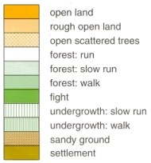
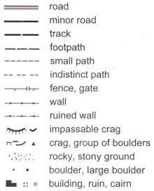
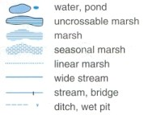
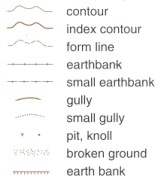

Orienteering Maps
Orienteering maps are produced especially for orienteering by either dedicated individuals, or more commonly, by professional mapping companies. All of these UK based companies have originated during the last 25 years, e.g. Harveys, Martin Bagness Orienteering Services, Peel Land Surveys and Stirling Surveys.
Scale to the top ↑
Large map scales are used since orienteering maps portray many features within a relatively small area. The two most commonly used scales are 1:10,000 or 1:15,000
For a 1:10,000 map, 1cm on the map is the equivalent to 100m on the ground and for a 1:15,000 map, 1cm on the map is equivalent to 150m on the ground.
Orientation to the top ↑
Unlike Ordnance Survey maps which are aligned to the National Grid, or Grid North, orienteering maps are aligned to Magnetic North. The direction of Magnetic North varies with geographical location and time. In June 2007, in the Preston area, Magnetic North was 3º 30' (3.5º) west of Grid North. This is changing at an annual rate of 12' to the east.
The reason for this choice is that orienteers use a magnetic compass to navigate with, so it makes sense for both map and compass to be utilising the same system.
Magnetic North is indicated on every orienteering map by a series of arrows, with North being at the top of the map.
Heights to the top ↑
In common with most modern maps, heights are shown in metres. Generally a 5m contour interval is used, but in areas with small height differences, e.g. sand dunes, a 2.5m contour interval is used.
Access to the top ↑
Orienteering maps invariably carry the following warning regarding land access :
"Note: possession of this map does not give right of access to this area for orienteering or for any other purpose. Permission must be obtained from the landowners. The representation of a track or path does not imply a right of way"
Since orienteering often takes place in sensitive areas, for example on the fells of the Lake District, in the mountains of Snowdonia or near Sites of Special Scientific Interest (SSSI) it is important that this warning is heeded. The future of orienteering in these areas is dependent upon people abiding by this.
Vegetation to the top ↑
|
One of the first things people notice about orienteering maps is that Open Land is yellow whereas Forest is either white or green. This is unlike most modern maps where Open Land is white. As the runnability of the Open Land (e.g. fields) reduces to Rough Open Land (e.g. rough pasture) so the shade of yellow becomes paler. The next distinction is where there are scattered trees, or Semi-open, as it is more commonly known. Runnability is again the reason for the different types of Forest. Runnable Forest is white, but as the runnability decreases it changes to Slow Run (light green), then to Walk (medium green) and ultimately Fight (dark green). These distinctions are enhanced by the use of green hatching to show areas of undergrowth, e.g. brashings or brambles. On this particular legend there was a requirement to show Sandy Ground, a vegetation type that isn't always applicable, but inevitably Settlements (e.g. houses, industrial estates etc.) are quite common. |
 |
Black Detail to the top ↑
|
The black detail on orienteering maps represents man made features and rock detail. Man made features include roads, tracks and paths. Unlike most atlases and maps there is no distinction as to the type of road, i.e. A or B. If an area has many small paths, some of which may be seasonal, a mapper may decide to omit some. Fences and walls are easy to imagine. Not shown here, there is also a symbol for an uncrossable fence which is similar to the fence symbol, but with pairs rather than single ticks. Organisers will often erect stiles to prevent damage to these features. Other line features that may be seen are railways and power lines. Having made a reconnaisance of an area a mapper will also decide an arbitrary size for crags and boulders below which the features will not be plotted. This will vary from one area to another and depend upon the number and prominence of these features. Cairns will not always be present, but other point features that may be mapped includes hides, root stocks (fallen tree roots), towers (e.g. forest fire towers), Ordnance Survey triangulation pillars, firing ranges and caves. |
 |
Blue Detail to the top ↑
|
The blue detail on orienteering maps represents water features. If the water feature is bounded by a black line, in this example an uncrossable marsh, then the feature is impassable. Another example would be a deep river. As with walls and fences, organisers may choose to erect temporary bridges to enable safe passage. Other features not shown here include water tanks and wells. |
 |
Brown Detail to the top ↑
|
The brown detail on orienteering maps represents land features. Increasingly, a photogrammetric plot is generated from air photographs to provide this information for the mapper. The mapper may choose to adjust the photogrammetric plot to enhance the shape of prominent features. This can be achieved by displacing a contour or alternatively, by using a form line. A form line is used to portray land features that fall between two contours. Correct use of contours and form lines helps the orienteer to judge how easy it will be to recognise a feature on the ground. A knoll is a small hill. Absent from this example are depressions (hollows in the ground). These are common control sites. The other land feature often seen on UK maps is a platform (a level area on a hillside). |
 |
Overprinting to the top ↑
Overprinting is where additional information is printed on top of the printed map. It is normally shown in either red or purple. There could be a number of reasons for this as follows:
- To show the course, i.e. a pre-marked map.
- To show Control Descriptions.
- To show Out of Bounds areas.
- To show crossing points for walls, fences and rivers.
- To show refreshment and first aid points in the terrain.
A booklet depicting international map symbols may be purchased from the British Orienteering Federation, see Bibliography.